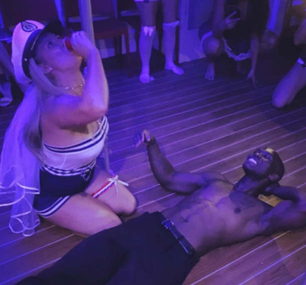

A stripper directory for Summerville, SC: private male dancers, touring male revues, gentlemen's clubs, and the bars to hit before or after.
Want a private show at your home, rental, or hotel instead? Tap below to call or text and check your date.

Charleston doesn't have a dedicated male strip club, and male revue nights around the area come and go, so public shows take some planning. Touring revues like Magic Men Live and iCandy Male Revue, which plays Myrtle Beach and Darlington, come through the region a few times a year. Closer to home, HonkyTonk Saloon in Ladson, about 15 minutes from Summerville, books occasional revue and burlesque nights between its country dance nights. Because these shows are so sporadic, most bachelorette groups end up booking a private dancer instead.
Michael At Your Place is a Charleston-based private dancer for bachelorette parties, birthdays, and girls' nights. Shows are $200 and run up to 90 minutes, with payment on arrival by cash, Venmo, or Cash App. He covers Charleston, Mount Pleasant, Folly Beach, and Isle of Palms, books both brunch and late-night shows, and welcomes last-minute dates. Summerville is about 30 minutes up I-26 from his home base, and he makes the drive for parties here.
Summerville itself has no strip clubs, but North Charleston is a short drive down I-26. G Club Gentlemen's Club on Peppermill Parkway is the closest, about 15 minutes away, and Gen X Cabaret in North Charleston is open daily from 2 p.m. to 2 a.m. with a full bar and VIP areas. Groups planning the bachelor side of a wedding weekend can also book private female dancers for a house party through local entertainment services.
For a classic tavern with food and late hours, start at The Icehouse downtown, or catch a live band at Montreux Bar and Grill. Trivia and music bingo groups do well at Oak Road Brewery and Off World Frothy Beard Brewery and Taproom, while Luxe Bar & Bistro is the pick for cocktails and a dressier dinner. Staying closer to Park Circle or the Navy Yard? Here's what's available for private parties in North Charleston. Splitting the weekend with a night on Shem Creek? See party options in Mount Pleasant.